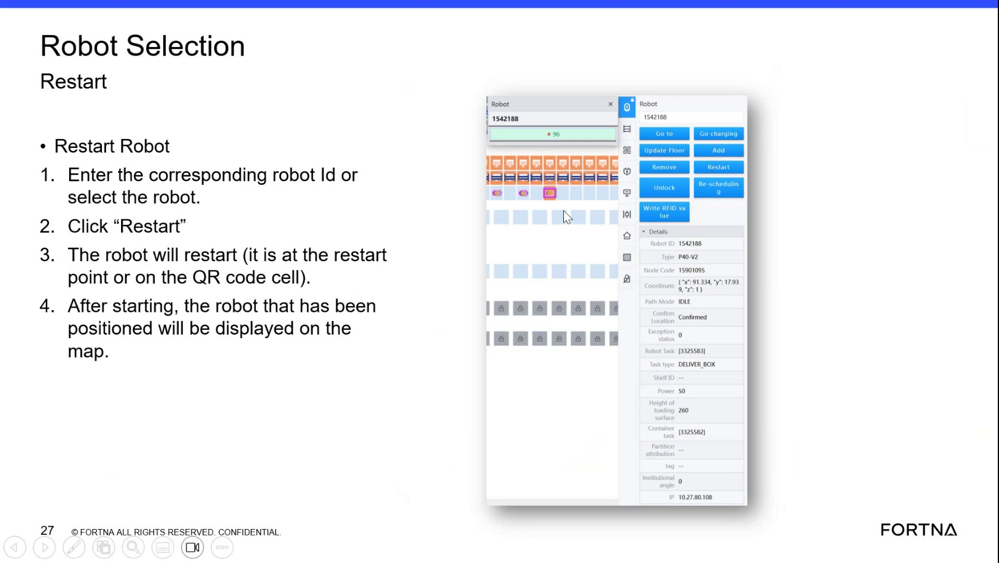

| Procedure ID | proc_use_container_selection_blue_indicator_tote_lookup_v1 |
|---|---|
| Title | Use Container Selection blue indicator and tote lookup to identify tote presence and tote number |
| Procedure Type | operation |
| Primary Role | operator |
| Support Safe | Yes |
| Capability Tags | device_roster_state |
| Access Surface | tipper_hmi |
| Audience Roles | operator |
| Failure Pattern Tags | None |
| Validation Status | needs_sme_review |
| Merge Status | source_finalized |
On the live Container Selection screen, dark blue indicates tote presence and light blue indicates an empty rack. Selecting a location shows a box icon and the tote number. You can also find a tote by typing a location number and selecting the rack/AGV where it is located (if it is in the system).
Use when you need to confirm whether a station/rack location currently has a tote present and, if present, identify the tote number and its location using the Container Selection screen.

Responsible role: operator
Instruction:
Open the live Container Selection screen used for totes/containers.
Expected result:
The Container Selection screen is displayed with station/rack tiles and the blue indicator(s) on top of some stations.
Responsible role: operator
Instruction:
Scan the station/rack tiles for the small blue indicator on top of stations.
Expected result:
You locate one or more tiles with a small blue indicator on top of the station/rack.
Responsible role: operator
Instruction:
Classify the indicator color: confirm dark blue = tote presence and light blue = empty rack.
Expected result:
You can correctly distinguish dark blue (tote present) from light blue (empty rack) for the location(s) you plan to check.
Responsible role: operator
Instruction:
Click/select the station/rack tile with the blue indicator you want to check.
Expected result:
The selected location responds in the UI (selection state changes) and reveals tote details.
Responsible role: operator
Instruction:
Verify the expected UI response: confirm a box icon appears and the tote number is displayed for the selected location.
Expected result:
For a dark blue (tote present) location, a box icon appears and the tote number is displayed. For a light blue (empty rack) location, the location represents an empty rack (no tote presence indicated).
Stop or Escalate If:
Responsible role: operator
Instruction:
If you need to find a tote by location, type the location number into the Container Selection lookup field and select the rack or AGV where it is located (only if it is in the system).
Expected result:
Entering a location number and selecting the corresponding rack/AGV returns the tote’s presence and tote number when the tote is in the system.
Stop or Escalate If: